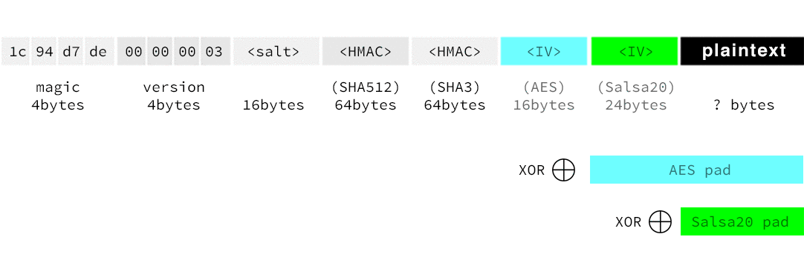

Governments wield great power. Consider:
- the USA may compel websites & businesses to "cooperate"
- the NSA may have already broken a popular cipher
If you're a programmer and wish to store user data that only the user can read -- excluding both you and governments -- you must encrypt in the browser or client app with care; you should avoid single encryption algorithms (possibly broken) and provided sources of entropy (possibly intentionally weak).
TripleSec is a simple, open-source triple-paranoid symmetric encryption library for the browser and Node.js. It encrypts data with Salsa 20, AES, and Twofish, so that a compromise of one or two of the ciphers will expose nothing.
Of course, encryption is only part of the story. TripleSec also: derives keys with
PBKDF2 to defend
against password-cracking and rainbow tables; authenticates
with HMAC to protect against
(adaptive) chosen-ciphertext attacks; and supplements the native entropy sources
(window.crypto.getRandomValues in the browser and crypto.rng in Node.js)
for fear they are weak.
Demo
Installation
For the browser, download triplesec.js (version 1.0.0).
In node, npm install triplesec.
How to Use It
Encryption is performed by the encrypt function. It periodically yields
control to not lock up your CPU. When done, it
calls back with (err, buffer).
triplesec.encrypt ({
data: new triplesec.Buffer('Pssst. I believe I love you.'),
key: new triplesec.Buffer('top-secret-pw'),
progress_hook: function (step, iterations, i) { /* ... */ }
}, function(err, buff) {
if (! err) {
var ciphertext = buff.toString('hex');
}
});
triplesec.encrypt
data: new triplesec.Buffer 'Pssst. I believe I love you.'
key: new triplesec.Buffer 'top-secret-pw'
progress_hook: (step, iterations, i) -> # ...
, (err, buff) ->
ciphertext = buff.toString 'hex' unless err
TripleSec's decrypt is painless.
triplesec.decrypt ({
data: new triplesec.Buffer(ciphertext, "hex"),
key: new triplesec.Buffer('top-secret-pw'),
progress_hook: function (step, iterations, i) { /* ... */ }
}, function (err, buff) {
if (! err) {
console.log(buff.toString());
}
});
var plaintext = buff.toString();
triplesec.decrypt
data: new triplesec.Buffer ciphertext, 'hex'
key: new triplesec.Buffer 'top-secret-pw'
progress_hook: (step, iterations, i) -> # ...
, (err, buff) ->
console.log buff.toString() unless err
Anatomy of Output
Output is the xor of 4 values, shown as rows below. The columns in the diagram are aligned. For more information, read on.
Algorithm Design
The TripleSec library encrypts data in four steps:
- Key derivation. Given a user-provided password, and a random salt value, generate four separate secret keys, one for each cipher (see Step 3), and two final keys for signing the ciphertext (see Step 4). This "key stretching" is done via PBKDF2. The "PRF" passed to PBKDF2 is the XOR of HMAC-SHA-512 and HMAC-SHA3. We use the XOR composition here to preserve and boost the pseudorandom property of the underlying two HMACs, therefore adding resilience to a break of other SHA-512 or SHA3 (which are fundamentally different algorithms). The output of this step is four seperate keys, used below.
- Initial value (IV) generation. A random number generator is queried to produce an initial for each of the three ciphers: a 192-bit IV for Salsa20; a 128-bit IV for Twofish; and a 128-bit IV for AES.
-
Cascading encryption. Each of the ciphers runs with the keys generated
in Step 1, and the IVs generated in Step 2.
-
Salsa20. The innermost cipher is a Salsa20 variant called XSalsa20. Like Salsa20, XSalsa20 is a stream cipher, meaning it can encrypt input texts of arbitrary length without a a block cipher mode of operation. XSalsa20 takes a 192-bit nonce rather than Salsa20's 64-bit nonce, but is provably as secure. Given a key, and an IV, XSalsa20 generates a random pad, which is then XOR'ed with the input message. This step of the algorithm outputs the concatenation of the IV and the result of the XOR operation.
- Twofish-CTR. The output of the previous step (call it C1) is the input of this step, which uses Twofish running in CTR mode. Let R2 be the the IV generated for Twofish in Step 2. Twofish-CTR works by encrypting R2, R2+1, R2+2,... with Twofish, and concatenating the result to yield a pad the size of C1. Call this pad P2 . Output (R2 || (P2 ⊕ C1)), where "||" denotes concatenation, and "⊕" denotes XOR.
- AES-256-CTR. In the final encryption step, apply AES-256 running in CTR mode to the output of the Twofish-CTR step. As above, first XOR the output of the previous step with the pad output by AES-256-CTR. Then prepend the IV used.
-
-
HMAC (or "sign") the ciphertext. Finally, TripleSec "signs" the ciphertext
to ensure that no adversary tampers with it. The data to be signed
is everything generated to date: a small header that encapsulates the version
of the algorithm (now at
1); the salt used in key derivation; and the output of the AES stage of the cascading encryption above. TripleSec "macs" with a concatenation of two HMACs: HMAC-SHA-512, and HMAC-SHA3, each run with a seperate key. The final output is a concatenation of: the header; the salt; the signature; and the outermost ciphertext.
Though this is not the exact composition suggested by Schneier in Applied Cryptography (Section 15.8 in the Second Edition), it is close. TripleSec never uses the output of one block cipher as input into the next, which theoretically might allow a crack of one cipher to be used to crack another. Rather, by merit of CTR mode, the three ciphers run on statistcally independent IVs, so a crack of one will not spread up or down the chain. The TripleSec technique takes one futher step not suggested by Schneier, which is to protect the inner IVs with the outer encryption algorithms, and only exposing the outermost IV in the clear. Though we can't prove this makes the scheme more secure, it seems like a reasonable idea: why reveal cipher inputs if we don't have to? Finally, this algorithm has the added advantage that the output ciphertext only increases by a constant additive term (i.e., the lengths of the header, the salt, the HMAC and the three IVs). Schneier's technique inflates ciphertexts by a factor N, where N is the number of independent ciphers used.
Similarly, TripleSec protects against a break in HMAC-SHA-512 by always combining it with an HMAC based on Keccak hash algorithm (soon to become the SHA-3 standard). Note that TripleSec combines these HMACs in two different ways. For PBKDF2 in Stage 1, TripleSec XORs the result of the two HMACs for pseudorandomness. For "signing" in Stage 4, TripleSec concatenates the two results to preserve collision-resistance. Unlike the suspect compositions in TLS and SSH, these simple compositions don't require either SHA-512 or SHA-3 to be strongly collision-resistant; rather, just weakly collision-resistant in line with the original construction. See Anja Lehmann's dissertation for more details on combinations of hashes.
Anticipated Questions
What's triplesec.Buffer?
It is a wrapper around either Node.js's Buffer or a browser equivalent. When you generate encrypted data, you can use the output buffer however you like. In our above examples, we converted to and from hex strings.
How does TripleSec generate randomness/entropy? Can I provide my own?
TripleSec first derives a random seed from a variety of sources:
from window.crypto.getRandomValues in the browser; from crypto.rng in Node.js;
from the millisecond field of your system time; and finally, from more-entropy, which counts how many floating-point-heavy computations can be done in a set amount of time.
This data is then stirred together and becomes the seed for HMAC_DRBG, whose HMAC is the XOR of HMAC-SHA-512 and HMAC-SHA3.
You may alternatively provide your own random number generator for encryption. Pass an rng function
along with your other data. This function should take two
arguments: the number of bytes needed,
and a callback that you fire with a triplesec.WordArray
containing the random data. You can create a WordArray
from a triplesec.Buffer by simply calling WordArray.from_buffer(buffer).
How are passphrases salted?
PBKDF2 takes as input a salt in addition to a secret passphrase,
to prevent an adversary from cracking many TripleSec-encrypted ciphtertexts
in parallel. TripleSec salts passphrases with a
random 8-byte sequence that's included with the ciphertext. By
default, TripleSec's triplesec.Encryptor object
uses the same salt until you call triplesec.Encryptor.resalt.
The advantage of salt reuse is that it's faster, since it avoids the intentionally
slow PBKDF2 step. On the other hand, an adversary can tell
if two different ciphertexts were encrypted in the same session if
the salt is not reset.
Can I encrypt files with it, in the browser?
Yes, using HTML5 features you can access file data without uploading it to a server. We're also likely to add an additional interface to the encrypt and decrypt functions, where you provide a data function instead of a single Buffer, for large data performance. TripleSec was planned with this feature in mind, and it'll be easy to use.
If you implement a file-hosting service using TripleSec, let us know, and we'll link to it in the "Who's Using It" section below.
Why isn't library X good enough (for X in Clipperz, Forge, SJCL, CryptoJS, etc.)?
There are lots of great JS Crypto libraries out there, and we've borrowed from some to build TripleSec. But combining cryptographic primitives to achieve IND-CCA2 security involves many fussy decisions and much avoidance of implementation pitfalls. We want all to have access to higher-level primitives that can be applied with little thought. Hence TripleSec!
Is this provably secure?
We don't know. We think that TripleSec can only be broken if all three algorithms are broken, but we don't have a proof. We furthmore think that TripleSec is non-malleable (and hence IND-CCA2 secure) due to the HMAC step. Current events and insider leaks are changing all cryptographic assumptions. A few months ago, TripleSec's cryptographic redudancy would be seen as a kinky fetish. But going forward, double- or triple-protection seems like a good idea, and we expect that proofs and/or proven constructions for cascading encryption will be available shortly.
If the input message size is n, how big is the ciphertext?
n + 200. The additive term is broken down as:
- 8 bytes for the header (which is
[0x1c94d7de, 0x1]). - 8 bytes for PBKDF2 salt
- 64 bytes for the HMAC-SHA512 signature
- 64 bytes for the HMAC-SHA3 signature
- 16 bytes for AES-256 IV
- 16 bytes for Twofish IV
- 24 bytes for Salsa20 IV
How do I verify the implementation against known test vectors?
In the browser, you can visit our-browser based
test page.
If you have Node.js on your system, you can clone the
github repo
and run make test. We've checked all algorithms
against known test vectors, with the exception of the XSalsa20
extension to Salsa20, which doesn't have published test vectors.
For the XSalsa20 extension, we check outputs against the official
Go Language Crypto library. We still check the underlying Salsa20 core against published test vectors.
I read someplace that it's impossible to write real crypto in JavaScript.
Some guy did publish a pretty well-known
rant on this topic, but almost all of it is wrong. Of course
you should deliver your Crypto libraries over TLS, we don't see what's so hard about that. And maybe JavaScript isn't the
most convenient language to write Crypto code in, but to
say the browser is "hostile" to crypto is extreme and untrue.
Browsers have good CSPRNGs now, and even if you don't trust
Apple and/or Linux and/or Chrome, we have some good
workarounds (see above).
True, one needs to take care not to overflow 32-bits, but with
a robust testing suite against known test vectors, one
can rule out this class of bugs.
Of course one shouldn't allow untrusted libraries to trample one's
trusted primitives, but that's true of any language (see
LD_PRELOAD attacks against libraries written in C).
What this author should have said is that JavaScript doesn't offer desctructors, so it's incovenient to scrub
buffers properly. We agree! But TripleSec has taken great care
to do this job manually. If you spot some unscrubbed buffers, please let us know.
Anyway, crypto in JS is needed. It's needed as long as JavaScript is the programming language of web apps, as long as app providers wish to stay blind to their users' data. In light of recent news about the NSA and government data access at the server level, it's more needed than ever.
Is there a streaming interface?
Not yet, it's in progress. The current interface requires the file to be fully loaded into memory before it's encrypted, but the current file format is compatible with streaming (with a single seek to write the HMACs).
Implementations Outside JavaScript
We welcome ports, and we'll list such projects here. The TripleSec checkout has test vectors which your implementation should match.
Who's Using it?
For starters, we are (Max Krohn & Chris Coyne), co-founders of OkCupid. We're working on an unrelated site now, and TripleSec will be used to encrypt our users' keys.
If you use TripleSec for something public, please contact us. We'll mention you here.
Here are some ideas, in case you're feeling ambitious:
- a TripleSec browser extension for highlighting and encrypting/decrypting text on any page
- diary/journal
- key storage
- password manager
- Bitcoin wallet
Can I help?
Please! Above all else, we encourage review of both our algorithm and the source code. If anyone has a spare proof of IND-CCA2 security sitting around the house, we'd love to it!
How do I reach you?
Our email addresses are right here. Please enter the password peppermint patty in the demo box,
and this as the ciphertext:
1c94d7de00000001ba9f953be39f204ff610e9889f97de9fd3ba61bb22708a55cdc747d013bae52f852e0fd4710de1f3dc2fc5aa5c9cffc5b5c536428f1a5516053b713905b2bbcc03605c5c97e3b6c3b14ba0af28806af0046ac352e9cc0f73e8da1b1ae5f13bfdc4e1f7772731c41946f5800aa5346328aaebde39088b064c293b221421290abc033f8bd2d1caf7390ae0420038ccb500627a87dda873e0d34930493080bd05d76afbefe9d5c5c3d64232dd3bfd453b4812214c4f568faf5f78715bc163d5a727ebe712dd24a0acbce39629148a48e0870ac96087090043d222548a689ab9cc4efe0b47c8221ae884ea716ebfb70fba28b769a30498d38edc7e7838